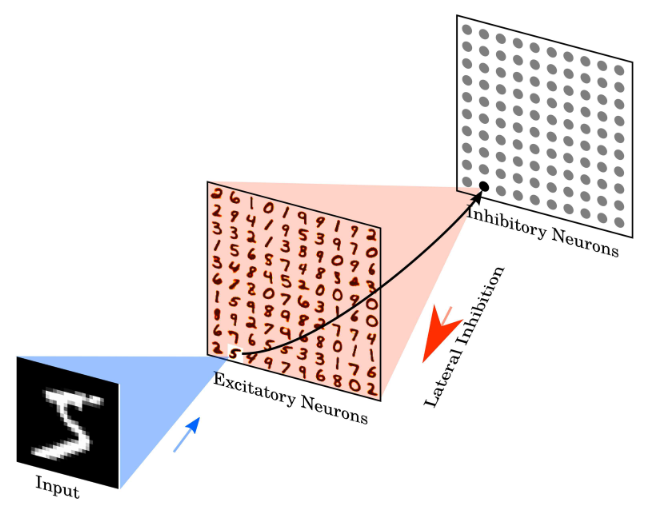

Research Replication: Unsupervised Learning of Digit Recognition Using STDP (Part 1)#
Let’s apply what we have learned throughout these notebooks to an actual problem. We are going to focus on using the constructs we have built (adaptive LIF neurons, STDP, generating Poisson spike trains, etc.) to replicate the results of a research paper from 2015[DC15]. The goal of this paper is to classify handwritten digits using only SNN primitives. Specifically, we will use the (pervasive) MNIST database of handwritten digits to train and test our network. We will use STDP as the learning algorithm for our network to learn from examples.
MNIST Dataset#
Let’s start by loading the dataset. There are two .zip files attached to this notebook (train and test). I wrote some code to load the data from these files.
Show code cell source
import zipfile
import json
import itertools
import random
from myst_nb import glue
random.seed(0)
def dataGenerator(path):
with zipfile.ZipFile(path) as train_zip:
with train_zip.open('index.json') as index_file:
idx_info = json.loads(index_file.read())
files = idx_info['files']
N = idx_info['N']
i = 0
for fname in files:
with train_zip.open(fname) as f:
data = json.loads(f.read())
images = data['images']
labels = data['labels']
for img, label in zip(images, labels):
yield (img, label)
i += 1
if i >= N: break
DIGIT_WIDTH = 14
DIGIT_HEIGHT = 14
DIGIT_SIZE = DIGIT_WIDTH * DIGIT_HEIGHT
glue("DIGIT_SIZE", DIGIT_SIZE, display=False)
glue("DIGIT_WIDTH", DIGIT_WIDTH, display=False)
glue("DIGIT_HEIGHT", DIGIT_HEIGHT, display=False)
# trainDataGenerator = dataGenerator('../_static/datasets/train-chunked.zip')
trainDataGenerator = dataGenerator('../_static/datasets/train-14x14-chunked.zip')
Each image is an array of 196(14 x 14) numbers. Each number represents a pixel intensity between 0 (blank) and 255 (filled). Most values will be 0 (blank). Let’s load an image at some random index.
Show code cell source
randomImage, randomLabel = random.choice(list(itertools.islice(trainDataGenerator, 0, 100)))
print(randomImage)
[0, 0, 0, 0, 0, 0, 0, 0, 0, 0, 0, 0, 0, 0, 0, 0, 0, 0, 0, 0, 0, 0, 0, 0, 0, 0, 0, 0, 0, 0, 0, 0, 5, 57, 125, 209, 214, 175, 66, 19, 0, 0, 0, 23, 1, 0, 51, 220, 250, 245, 228, 249, 239, 108, 0, 0, 0, 20, 1, 0, 12, 98, 138, 160, 217, 245, 189, 33, 0, 0, 0, 0, 0, 0, 4, 62, 187, 247, 227, 134, 37, 0, 0, 0, 0, 0, 0, 0, 27, 222, 253, 212, 38, 2, 0, 0, 0, 0, 0, 0, 0, 0, 2, 42, 78, 216, 209, 53, 1, 0, 0, 0, 0, 0, 0, 0, 0, 0, 0, 27, 163, 189, 16, 0, 0, 0, 0, 0, 0, 0, 0, 0, 0, 0, 113, 208, 28, 0, 0, 0, 0, 0, 39, 174, 84, 37, 106, 146, 229, 155, 11, 0, 0, 0, 0, 0, 62, 230, 220, 219, 246, 223, 152, 32, 0, 0, 0, 0, 0, 0, 3, 114, 211, 153, 86, 32, 2, 0, 0, 0, 0, 0, 0, 0, 0, 0, 0, 0, 0, 0, 0, 0, 0, 0, 0, 0]
It’s a little difficult to interpret this so let’s chunk it into a (14 x 14) 2D array and visualize the intensities:
Show code cell source
import matplotlib.pyplot as plt
import numpy as np
np.random.seed(0)
digitPixels = np.reshape(np.array(randomImage), (DIGIT_WIDTH, DIGIT_HEIGHT))
plt.figure()
plt.imshow(digitPixels, cmap='gray_r')
plt.axis('on')
for i in range(digitPixels.shape[0]):
for j in range(digitPixels.shape[1]):
plt.text(j, i, int(digitPixels[i, j]), color='blue', fontsize=8, ha='center', va='center')
# Setting the ticks to show every number on both axes
plt.xticks(np.arange(0, DIGIT_WIDTH, 1))
plt.yticks(np.arange(0, DIGIT_HEIGHT, 1))
plt.show()
print('Label:', randomLabel)
Label: 3
We’re going to train an SNN that can recognize these digits (given pixel intensities, try to find the correct label). First, we need to convert these pixel intensities into spike trains. We will use the same method of Poisson spike train generation that we wrote in the previous notebook.
import numpy as np
def poisson_fire(values, min_value=0, max_value=255, min_rate=0, max_rate=10, dt=0.001):
relativeValues = (values - min_value) / (max_value - min_value)
relativeRates = min_rate + relativeValues * (max_rate - min_rate)
probsOfFire = relativeRates * dt
firings = np.random.rand(*values.shape) < probsOfFire
return firings / dt
This will fire a spike at a rate proportional to the pixel intensity. We will use this spike train as the input to our network.
We will use a decaying post-synaptic potential function, as implemented in a previous notebook connected to the input.
class SynapseCollection:
def __init__(self, n=1, tau_s=0.05, t_step=0.001):
self.n = n
self.a = np.exp(-t_step / tau_s) # Decay factor for synaptic current
self.b = 1 - self.a # Scale factor for input current
self.voltage = np.zeros(n) # Initial voltage of neurons
def step(self, inputs):
self.voltage = self.a * self.voltage + self.b * inputs
return self.voltage
t_step = 0.001
synapses = SynapseCollection(n=len(randomImage), tau_s=0.1, t_step=t_step)
def step1(inp):
input_spikes = poisson_fire(np.array(inp), dt=t_step, min_rate=0.1, max_rate=100)
return input_spikes, synapses.step(input_spikes)
Show code cell source
import matplotlib.pyplot as plt
voltages_over_time = []
T = 1 # second
for _ in np.arange(0, T, t_step):
spikes, psp_voltages = step1(randomImage)
voltages_over_time.append(psp_voltages)
average_values = np.mean(voltages_over_time, axis=0)
plt.figure()
# plt.bar(average_values)
plt.bar(np.arange(len(average_values)), average_values)
plt.xlabel('Neuron index')
plt.ylabel('Average voltage')
plt.show()
If we lay this out in a grid, we can visualize the spike train as a series of spikes at different intensities. It’s going to look like our input image.
Show code cell source
# plot in a 14x14 grid
plt.figure()
plt.imshow(average_values.reshape(14, 14), cmap='hot')
plt.colorbar()
plt.show()
The input to our network is going to be a random digit (like the one above) from the training set “displayed” to the network for some time (0.35 seconds), followed by a blank image for some time (0.15 seconds), and then repeating with the next image for every image in our training set.
TIME_TO_SHOW_IMAGES = 0.35 # seconds
TIME_TO_SHOW_BLANK = 0.15 # seconds
NUM_IMAGES = 100
for _ in range(NUM_IMAGES):
current_image, label = next(trainDataGenerator)
for _ in np.arange(0, TIME_TO_SHOW_IMAGES, t_step):
step1(np.array(current_image))
for _ in np.arange(0, TIME_TO_SHOW_BLANK, t_step):
step1(np.zeros(len(current_image)))
We’ll then connect this input to a layer of Adaptive LIF neurons (which we’ll call excitatory_neurons). We will use STDP to determine the weights between the input and the neurons.
Show code cell source
class STDPWeights:
def __init__(self, numPre, numPost, tau_plus = 0.03, tau_minus = 0.03, a_plus = 0.1, a_minus = 0.11, g_min=0, g_max=1):
self.numPre = numPre
self.numPost = numPost
self.tau_plus = tau_plus
self.tau_minus = tau_minus
self.a_plus = a_plus
self.a_minus = a_minus
self.x = np.zeros(numPre)
self.y = np.zeros(numPost)
self.g_min = g_min
self.g_max = g_max
self.w = np.random.uniform(g_min, g_max, (numPre, numPost)) / numPost # Initialize weights
def step(self, t_step):
self.x = self.x * np.exp(-t_step/self.tau_plus)
self.y = self.y * np.exp(-t_step/self.tau_minus)
def updateWeights(self, preOutputs, postOutputs):
self.x += (preOutputs > 0) * self.a_plus
self.y -= (postOutputs > 0) * self.a_minus
alpha_g = self.g_max - self.g_min # Scaling factor for weight updates
preSpikeIndices = np.where(preOutputs > 0)[0] # Indices of pre-synaptic spiking neurons
postSpikeIndices = np.where(postOutputs > 0)[0]
for ps_idx in preSpikeIndices:
self.w[ps_idx] += alpha_g * self.y
self.w[ps_idx] = np.clip(self.w[ps_idx], self.g_min, self.g_max)
for ps_idx in postSpikeIndices:
self.w[:, ps_idx] += alpha_g * self.x
self.w[:, ps_idx] = np.clip(self.w[:, ps_idx], self.g_min, self.g_max)
class LIF:
def __init__(self, n=1, dim=1, tau_rc=0.02, tau_ref=0.002, v_th=1,
max_rates=[200, 400], intercept_range=[-1, 1], t_step=0.001, v_init = 0):
self.n = n
# Set neuron parameters
self.dim = dim # Dimensionality of the input
self.tau_rc = tau_rc # Membrane time constant
self.tau_ref = tau_ref # Refractory period
self.v_th = np.ones(n) * v_th # Threshold voltage for spiking
self.t_step = t_step # Time step for simulation
# Initialize state variables
# self.voltage = np.ones(n) * v_init # Initial voltage of neurons
self.voltage = np.random.uniform(0, 1, n) # Initial voltage of neurons
self.refractory_time = np.zeros(n) # Time remaining in refractory period
self.output = np.zeros(n) # Output spikes
# Generate random max rates and intercepts within the given range
max_rates_tensor = np.random.uniform(max_rates[0], max_rates[1], n)
intercepts_tensor = np.random.uniform(intercept_range[0], intercept_range[1], n)
# Calculate gain and bias for each neuron
# self.gain = self.v_th * (1 - 1 / (1 - np.exp((self.tau_ref - 1/max_rates_tensor) / self.tau_rc))) / (intercepts_tensor - 1)
# self.bias = np.expand_dims(self.v_th - self.gain * intercepts_tensor, axis=1)
self.gain = np.ones(n)
self.bias = np.zeros(n)
# Initialize random encoders
# self.encoders = np.random.randn(n, self.dim)
# self.encoders /= np.linalg.norm(self.encoders, axis=1)[:, np.newaxis]
self.encoders = np.ones((n, self.dim))
def reset(self):
# Reset the state variables to initial conditions
self.voltage = np.zeros(self.n)
self.refractory_time = np.zeros(self.n)
self.output = np.zeros(self.n)
def step(self, inputs):
dt = self.t_step # Time step
# Update refractory time
self.refractory_time -= dt
delta_t = np.clip(dt - self.refractory_time, 0, dt) # ensure between 0 and dt
# Calculate input current
I = np.sum(self.bias + inputs * self.encoders * self.gain[:, np.newaxis], axis=0) / self.n
# Update membrane potential
self.voltage = I + (self.voltage - I) * np.exp(-delta_t / self.tau_rc)
# Determine which neurons spike
spike_mask = self.voltage > self.v_th
self.output[:] = spike_mask / dt # Record spikes in output
# Calculate the time of the spike
t_spike = self.tau_rc * np.log((self.voltage[spike_mask] - I[spike_mask]) / (self.v_th[spike_mask] - I[spike_mask])) + dt
# Reset voltage of spiking neurons
self.voltage[spike_mask] = 0
# Set refractory time for spiking neurons
self.refractory_time[spike_mask] = self.tau_ref + t_spike
return self.output # Return the output spikes
class ALIF:
def __init__(self, n=1, dim=1, tau_rc=0.02, tau_ref=0.002, v_th=1,
max_rates=[200, 400], intercept_range=[-1, 1], t_step=0.001, v_init = 0,
tau_inh=0.05, inc_inh=1.0 # <--- ADDED
):
self.n = n
# Set neuron parameters
self.dim = dim # Dimensionality of the input
self.tau_rc = tau_rc # Membrane time constant
self.tau_ref = tau_ref # Refractory period
self.v_th = np.ones(n) * v_th # Threshold voltage for spiking
self.t_step = t_step # Time step for simulation
self.inh = np.zeros(n) # <--- ADDED
self.tau_inh = tau_inh # <--- ADDED
self.inc_inh = inc_inh # <--- ADDED
# Initialize state variables
# self.voltage = np.ones(n) * v_init # Initial voltage of neurons
self.voltage = np.random.uniform(0, 1, n) # Initial voltage of neurons
self.refractory_time = np.zeros(n) # Time remaining in refractory period
self.output = np.zeros(n) # Output spikes
# Generate random max rates and intercepts within the given range
max_rates_tensor = np.random.uniform(max_rates[0], max_rates[1], n)
intercepts_tensor = np.random.uniform(intercept_range[0], intercept_range[1], n)
# Calculate gain and bias for each neuron
# self.gain = self.v_th * (1 - 1 / (1 - np.exp((self.tau_ref - 1/max_rates_tensor) / self.tau_rc))) / (intercepts_tensor - 1)
# self.bias = np.expand_dims(self.v_th - self.gain * intercepts_tensor, axis=1)
self.gain = np.ones(n)
self.bias = np.zeros(n)
# Initialize random encoders
# self.encoders = np.random.randn(n, self.dim)
# self.encoders /= np.linalg.norm(self.encoders, axis=1)[:, np.newaxis]
self.encoders = np.ones((n, self.dim))
def reset(self):
# Reset the state variables to initial conditions
self.voltage = np.zeros(self.n)
self.refractory_time = np.zeros(self.n)
self.output = np.zeros(self.n)
self.inh = np.zeros(self.n) # <--- ADDED
def step(self, inputs):
dt = self.t_step # Time step
# Update refractory time
self.refractory_time -= dt
delta_t = np.clip(dt - self.refractory_time, 0, dt) # ensure between 0 and dt
# Calculate input current
I = np.sum(self.bias + inputs * self.encoders * self.gain[:, np.newaxis], axis=0) / self.n
# Update membrane potential
self.voltage = I + (self.voltage - I) * np.exp(-delta_t / self.tau_rc)
# Determine which neurons spike
spike_mask = self.voltage > self.v_th + self.inh # <--- ADDED + self.inh
self.output[:] = spike_mask / dt # Record spikes in output
# Calculate the time of the spike
t_spike = self.tau_rc * np.log((self.voltage[spike_mask] - I[spike_mask]) / (self.v_th[spike_mask] - I[spike_mask])) + dt
# Reset voltage of spiking neurons
self.voltage[spike_mask] = 0
# Set refractory time for spiking neurons
self.refractory_time[spike_mask] = self.tau_ref + t_spike
self.inh = self.inh * np.exp(-dt / self.tau_inh) + self.inc_inh * (self.output > 0) # <--- ADDED
return self.output # Return the output spikes
NUM_EXCITATORY = 16
stdp = STDPWeights(numPre=DIGIT_SIZE, numPost=NUM_EXCITATORY)
excitatory_neurons = ALIF(n=NUM_EXCITATORY, t_step=t_step)
excitatory_psp = SynapseCollection(n=NUM_EXCITATORY, t_step=t_step, tau_s=0.2)
def step2(inp):
input_spikes = poisson_fire(np.array(inp), dt=t_step, min_rate=0.1, max_rate=100)
excitatory_inp = synapses.step(input_spikes)
stdp.step(t_step)
stdp.updateWeights(input_spikes, excitatory_neurons.output)
excitatory_inp = inp @ stdp.w
excitatory_spikes = excitatory_neurons.step(excitatory_inp)
excitatory_outp = excitatory_psp.step(excitatory_spikes)
step2(randomImage)
Our goal is going to be to have each excitatory neuron associated with each digit. In order to do that, we want:
To ensure that none of the neurons get too “greedy” and start firing with every input. For that reason, we implement the excitatory layer with ALIFs, which become less sensitive after they start firing.
To try to encourage one neuron to be associated with each digit (we don’t want every neuron to represent a
6). When a digit is shown, we want to only encourage one neuron to respond. To do this, we add an extra inhibitory layer.
The inhibitory layer is a layer of LIF neurons (the same number of neurons as the excitatory layer). Each excitatory neuron has one corresponding inhibitory neuron. But, each inhibitory neuron will inhibit every other excitatory neuron. So, when an excitatory x neuron fires, it triggers its associated inhibitory neuron to fire. When that inhibitory neuron fires, it inhibits every excitatory neuron except for x, making it more likely that x is the only excitatory neuron that fires.
inhibitory_neurons = LIF(n=NUM_EXCITATORY, t_step=t_step)
inhibitory_psp = SynapseCollection(n=NUM_EXCITATORY, t_step=t_step, tau_s=0.2)
inhibitory_outp = np.zeros(NUM_EXCITATORY)
def step3(inp):
global inhibitory_outp
input_spikes = poisson_fire(np.array(inp), dt=t_step, min_rate=0.1, max_rate=100)
excitatory_inp = synapses.step(input_spikes)
stdp.step(t_step)
stdp.updateWeights(input_spikes, excitatory_neurons.output)
excitatory_inp = excitatory_inp @ stdp.w + inhibitory_outp * -1
excitatory_spikes = excitatory_neurons.step(excitatory_inp)
excitatory_outp = excitatory_psp.step(excitatory_spikes)
inhibitory_spikes = inhibitory_neurons.step(excitatory_outp)
raw_inhibitory_outp = inhibitory_psp.step(inhibitory_spikes)
total_inhibiry_outp = np.sum(raw_inhibitory_outp)
inhibitory_outp = total_inhibiry_outp * np.ones(NUM_EXCITATORY) - raw_inhibitory_outp
step3(randomImage)

In order make sure that some neuron is responding, we also specify that we can only advance to the next digit if at least 5 excitatory neurons have fired while showing the digit. If not, then we increase the digit’s intensity (by upping the maximum firing rate and showing that digit for longer).
t_step = 0.002 # Time step for the simulation
synapses = SynapseCollection(n=DIGIT_SIZE, tau_s=0.1, t_step=t_step) # Synapse collection for input connections
# STDP (Spike-Timing-Dependent Plasticity) weight matrix between input and excitatory neurons
stdp = STDPWeights(numPre=DIGIT_SIZE, numPost=NUM_EXCITATORY, g_min=-0.1, g_max=1.1)
# Inhibitory neurons and their corresponding post-synaptic potential (PSP) collection
inhibitory_neurons = LIF(n=NUM_EXCITATORY, t_step=t_step)
inhibitory_psp = SynapseCollection(n=NUM_EXCITATORY, t_step=t_step, tau_s=0.5)
inhibitory_outp = np.zeros(NUM_EXCITATORY) # Initialize inhibitory output array
# Excitatory neurons and their corresponding PSP collection
excitatory_neurons = ALIF(n=NUM_EXCITATORY, t_step=t_step, tau_inh=1.1)
excitatory_psp = SynapseCollection(n=NUM_EXCITATORY, t_step=t_step, tau_s=0.2)
# Function to perform a simulation step
def step(inp, max_input_rate):
global inhibitory_outp
input_spikes = poisson_fire(np.array(inp), dt=t_step, min_rate=0.01, max_rate=max_input_rate) # Generate input spikes
input_psp = synapses.step(input_spikes) # Step the input synapses to get PSP
stdp.step(t_step) # Step the STDP mechanism
stdp.updateWeights(input_spikes, excitatory_neurons.output) # Update weights based on input and output spikes
excitatory_inp = input_psp @ stdp.w + np.clip(inhibitory_outp * -1, a_max=0, a_min=None) # Calculate excitatory input combining synapse output and inhibitory output
excitatory_spikes = excitatory_neurons.step(excitatory_inp) # Step excitatory neurons to get their spikes
excitatory_outp = excitatory_psp.step(excitatory_spikes) # Update the excitatory post-synaptic potential
inhibitory_spikes = inhibitory_neurons.step(excitatory_outp) # Step inhibitory neurons using excitatory output
# print(input_psp@stdp.w, excitatory_inp, excitatory_spikes, excitatory_outp, inhibitory_spikes)
raw_inhibitory_outp = inhibitory_psp.step(inhibitory_spikes) # Update the inhibitory post-synaptic potential
total_inhibitory_outp = np.sum(raw_inhibitory_outp) # Calculate the total inhibitory output
inhibitory_outp = total_inhibitory_outp * np.ones(NUM_EXCITATORY) - raw_inhibitory_outp # Calculate the inhibitory output for each neuron
num_fires = np.sum(excitatory_spikes > 0) # Count the number of excitatory neurons that fired
return num_fires
def run_simulation(num_images=1):
for _ in range(num_images):
current_image, label = next(trainDataGenerator) # Get the next image and label from the data generator
total_fires = 0 # Initialize the total number of fires
max_input_rate = 0.5 # Initial maximum input firing rate
while total_fires < 5:
for _ in np.arange(0, TIME_TO_SHOW_IMAGES, t_step): # Display the image for a set duration
num_fires = step(np.array(current_image), max_input_rate=max_input_rate) # Perform a simulation step
total_fires += num_fires # Accumulate the number of fires
if total_fires >= 5: break # Break if the total number of fires is reached (this is different from the original paper but helps run the simulation faster)
max_input_rate *= 1.1 # Increase the input firing rate
for _ in np.arange(0, TIME_TO_SHOW_BLANK, t_step): # Show a blank input for a set duration
step(np.zeros(len(current_image)), max_input_rate=max_input_rate) # Perform a simulation step with blank input
def plotWeights():
NUM_DISPLAY_ROWS = 4
NUM_DISPLAY_COLS = 4
plt.figure()
for i in range(NUM_EXCITATORY):
plt.subplot(NUM_DISPLAY_ROWS, NUM_DISPLAY_COLS, i+1)
plt.imshow(stdp.w[:, i].reshape(DIGIT_WIDTH, DIGIT_HEIGHT), cmap='gray')
plt.axis('off')
plt.show()
print("Randomly initialized weights"); plotWeights()
for n in [100, 1000]:
print(f"Run simulation for {n} images"); run_simulation(num_images=n); print("Updated weights"); plotWeights()
Randomly initialized weights
Run simulation for 100 images
/tmp/ipykernel_1168457/2666458793.py:167: RuntimeWarning: invalid value encountered in log
t_spike = self.tau_rc * np.log((self.voltage[spike_mask] - I[spike_mask]) / (self.v_th[spike_mask] - I[spike_mask])) + dt
Updated weights
Run simulation for 1000 images
Updated weights
It takes a while but if you run the simulation for long enough, you can start to see the “imprint” of the input appearing on the weights for a given neuron. Note that we’ve scaled down this example (both the inputs and the number of neurons) so the digits might not be as clear as they would be in a full simulation. It also takes a long time to train, so the weights will be incomplete. However, in the next notebook, we will pre-supply a larger model and execute it.
This notebook (mostly) follows the paper: Diehl, Peter U., and Matthew Cook. “Unsupervised learning of digit recognition using spike-timing-dependent plasticity.” [DC15] but there are some differences.
In the paper, there is an additional labeling step (where we analyze each neuron to determine which digit it represents) and testing step (to determine the accuracy). With 6,400 neurons (rather than our 100) and 28 x 28 inputs (rather than our 14 x 14), they achieve an accuracy of 95%. However, we are going to skip these steps (implementation is similar to what we did above) and stick to a smaller network that can run more quickly.
Summary#
We created a network that can recognize digits from the MNIST dataset
Our network uses primitives that we learned in prior notebooks: LIFs, ALIFs, STDP, and PSPs
The STDP weights, which we learn over time, encode the digits being recognized
Our network is a scaled down version of the one implemented by Diehl and Cook [DC15]